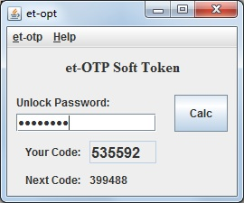

デスクトップで使える TOTP ソフトトークン
et-otp-v2 は2段階認証に使う時間ベースのワンタイムパスワード（RFC 6238）を生成します。Java Swing で作った小さなプログラムで、シークレットはパスワードで暗号化して保存します。
ダウンロード ソースコード
機能
- 30秒ごとに変わる6桁の TOTP コード（RFC 6238 / RFC 4226）を生成し、次のコードもあわせて表示します。
- Google、Amazon AWS、Microsoft、Dropbox、GitHub などのサービスが提供する Base32 形式のシークレットを使えます。
- シークレットはロック解除用のパスワードで暗号化して保存します（PBKDF2-HMAC-SHA256 と AES-256-GCM）。
- 生成したコードをクリップボードにコピーできます。
インストールと起動
Releases ページから、使っている OS に合うポータブル版をダウンロードします。ポータブル版には Amazon Corretto 25（LTS）から作った Java の実行環境を同梱しているので、インストールや管理者の権限は要りません。
| OS | ファイル | 起動の方法 |
|---|---|---|
| Windows | et-otp-v2-<バージョン>-windows-x64-portable.zip | 展開して et-otp-v2.bat をダブルクリックします。 |
| macOS（Apple シリコン） | et-otp-v2-<バージョン>-macos-arm64-portable.tar.gz | 展開して et-otp-v2.command をダブルクリックします。起動できない場合は、ターミナルで sh et-otp-v2.command を実行してください。 |
| Linux | et-otp-v2-<バージョン>-linux-x64-portable.tar.gz | 展開して、ターミナルで sh et-otp-v2.sh を実行します。 |
同梱している Java の実行ファイルは、Amazon の署名が付いた Corretto のものをそのまま使っています。会社や組織のパソコンで使う場合は、ソフトウェアの利用について社内のルールを確かめてから使ってください。
Java 17 以降が入っている環境では、JAR だけを使うこともできます。
java -jar et-otp-v2-<バージョン>.jar自分でビルドする場合は mvn verify を実行し、target フォルダの JAR を使います。
トークンの設定
- サービスの2段階認証の設定画面で、QR コードの代わりにシークレットをテキストで表示する方法を選びます。
- et-otp-v2 を起動します。初めて起動したときは初期設定のウィザードが開くので、Base32 のコードを貼り付けて、ロック解除用のパスワードを決めます。あとから登録したり登録し直したりする場合は、et-OTP v2 → 設定 を開き、保存 を押します。
- メイン画面にロック解除用のパスワードを入力して 表示 を押します（Enter キーでも同じです）。表示されたコードをサービスに入力し、設定を完了します。
設定はホームフォルダの .et-otp.properties に保存されます。起動したときの作業フォルダに .et-otp.properties がある場合は、そちらを使います（et-otp 1.x と同じ動きです）。ファイルの場所は ヘルプ → バージョン情報 で確認できます。言語とウィンドウの位置は、同じフォルダの .et-otp-ui.properties に保存されます。
画面の言語は OS の設定に合わせます。OS の言語が日本語なら日本語、それ以外なら英語で表示します。切り替える場合は、et-OTP v2 → 設定 を開き、全般 タブで言語を選びます。
et-otp 1.x からの移行
et-otp-v2 は元の et-otp の設定ファイルを読めるので、今の .et-otp.properties をそのまま使えます。同じフォルダで et-otp-v2 を起動し、今のパスワードでロックを解除してください。
最初にロックを解除できたとき、et-otp-v2 は古いファイルを .et-otp.properties.v1.bak にコピーし、.et-otp.properties を新しい形式で書き直します。書き直したことは、メイン画面の下のステータス欄に表示されます。
移行のあとで、コードが使えるかを一度確かめてください。古い形式ではパスワードの間違いを必ず見つけられるとは限りません。サービスがコードを受け付けない場合は、バックアップのファイルを元に戻し、正しいパスワードでロックを解除し直してください。
元の et-otp 1.x は新しい形式を読めません。元のバージョンに戻す場合は、バックアップのファイルを使ってください。新しいコードが使えることを確かめたら、バックアップは削除してください。バックアップは古い方式の弱い暗号化で守られたままです。
| et-otp 1.x | et-otp-v2 | |
|---|---|---|
| 鍵の導出 | PBKDF2-HMAC-SHA1、1,000回、128ビットの鍵 | PBKDF2-HMAC-SHA256、600,000回、256ビットの鍵 |
| 暗号化 | AES の ECB モード、PKCS#5 パディング | AES-256-GCM、ランダムな96ビットの IV |
| パスワードの間違いと改ざん | 見つけられない場合がある | 必ず見つける |
ライセンスとクレジット
et-otp-v2 は GNU General Public License v2.0 only で公開しているフリーソフトウェアです。
Bernd Eckenfels 氏の et-otp を引き継いで保守しています。RFC 4226 にある HOTP の参照実装と、Google Authenticator プロジェクトの Base32 実装のコードを含みます。